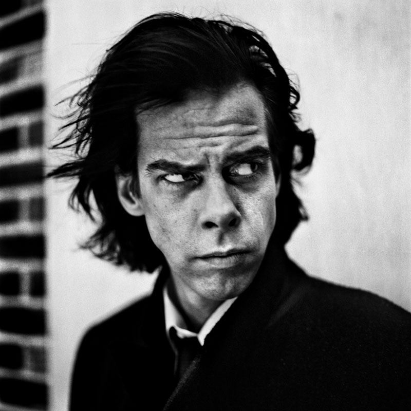
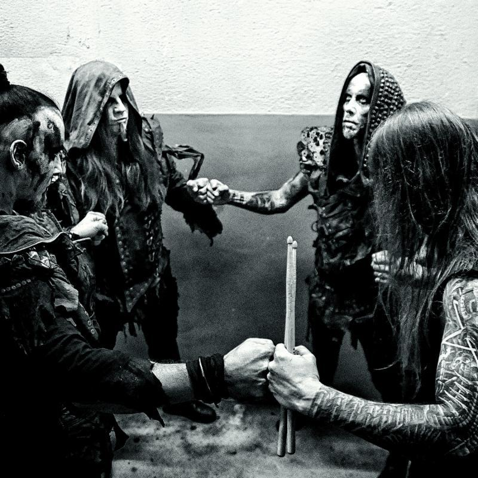

"I got bored with my life so I decided to learn to code"
Visit this cool website|  |
Nick Cave"Nick Cave is a man of many talents. Musician. Songwriter. Screenwriter. Novelist. Actor. The Australian was born in Warracknabeal, Victoria in 1957, and would go onto form the alternative rock band Nick Cave & The Bad Seeds, who have since successfully released a string of hit albums. In film, Nick has starred in two films with Brad Pitt: Johnny Suede (1991) by Tom DiCillo and The Assassination of Jesse James by the Coward Robert Ford (2007). He scripted the dark western, The Proposition (2005) and has contributed to over 50 soundtracks including Gas, Food Lodging (1992) with fellow rocker J. Mascis of Dinosaur Jr.. His first contribution was in the Marlon Brando film, The Freshman (1990): 'From Her To Eternity'. Nick is also a lyricist and poet. His first offering was 'King Ink' (1988)." |
|  |
Behemoth"Behemoth is a Polish blackened death metal band from Gdańsk, formed in 1991. They are considered to have played an important role in establishing the Polish extreme metal underground. Until the late 1990s, the band played a traditional black metal style with heathen lyrical content, but soon changed to that of occult and thelemic themes written by their lead vocalist Nergal and Krzysztof Azarewicz. With the 1999 release of Satanica, the band demonstrated their presence in the death metal scene, while retaining their own signature style characterized by the drum work of Inferno, multi-layered vocals and Middle-Eastern influences. Despite Behemoth having been labeled as death metal or thrash metal-influenced, Nergal has mentioned that he does not like the band to be labeled." |
David Bowie"David Bowie was born in South London's Brixton neighborhood on January 8, 1947. His first hit was the song "Space Oddity" in 1969. The original pop chameleon, Bowie became a fantastical sci-fi character for his breakout Ziggy Stardust album." |